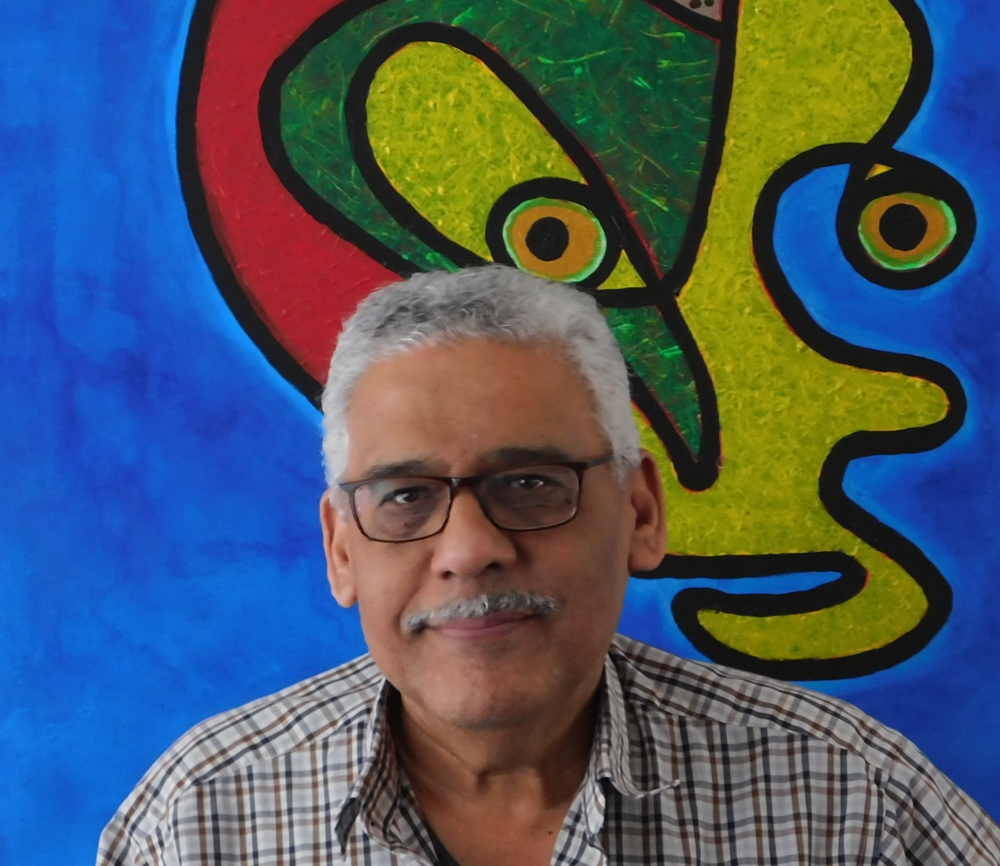

I am an Egyptian/Dutch self-taught artist based in Amsterdam, Netherlands. I was born in Cairo in 1952. I studied Economy in Cairo, Egypt. I hold a Bachelor’s degree in Education from Amsterdam, Netherlands, and a Master’s degree in Arabic Studies. My journey as an artist began in year 2000 when my family and I experienced immense pain due to my daughter’s chronic illness.
In 1999, my daughter was born with Epidermolysis Bullosa (EB), one of the most challenging diseases characterized by fragile skin. Although I had never drawn or painted before, I started creating these peculiar drawings on my daughter’s first birthday. Since then, she has become the center of our attention and the driving force behind my art.
In 2017, as my children grew older, I found more time for myself and made the decision to turn my painting hobby into a professional career. I began by creating an Instagram page to share my art and started exploring digital drawing and painting. Two years later, I expanded my artistic repertoire by delving into mixed media photography. Currently, I primarily express myself through these two different techniques, while also constantly evolving and seeking to enhance my skills and explore new artistic approaches.
Soon after establishing my Instagram presence, I was pleasantly surprised by the immense interest in my work from people with diverse artistic backgrounds. Encouraged by this positive reception, I started participating in art competitions, gradually publishing my work in magazines, and actively participating in exhibitions. As time went on, my art garnered recognition, and I am proud to provide a list of my publications, exhibitions, and prizes below.
My artwork exhibits a controlled randomness. Each artwork serves as an expression of myself, conveying my creative vision and intent. However, many viewers perceive different elements in my paintings, providing them with multiple perspectives. Regardless, all my works embody the search for beauty within chaos and despair.
While creating my art, I often contemplate the global challenges faced by humanity and ponder over ways to contribute positively. Important part of my artwork reflects these concerns, addressing issues such as climate change, nature and the environment, war, refugees, the ongoing pandemic, social injustices, racism, poverty, and human rights violations. Additionally, I delve into modern societal problems like loneliness, depression, isolation, and the spread of fake news. Through my work, I aspire to raise awareness and foster understanding by evoking empathy towards the struggles faced by others.
“I never studied art or took any courses. I'm completely self-taught. My art is inspired by my daughter.”